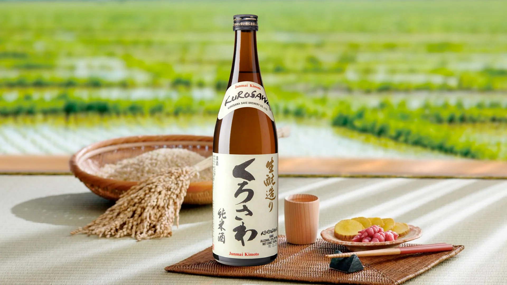
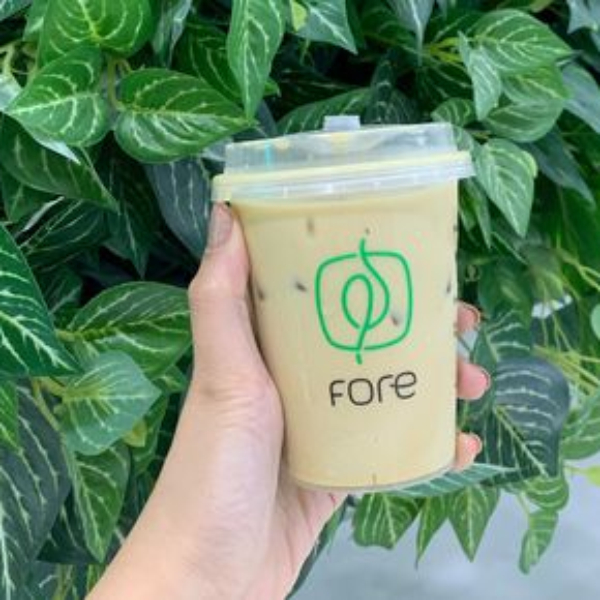
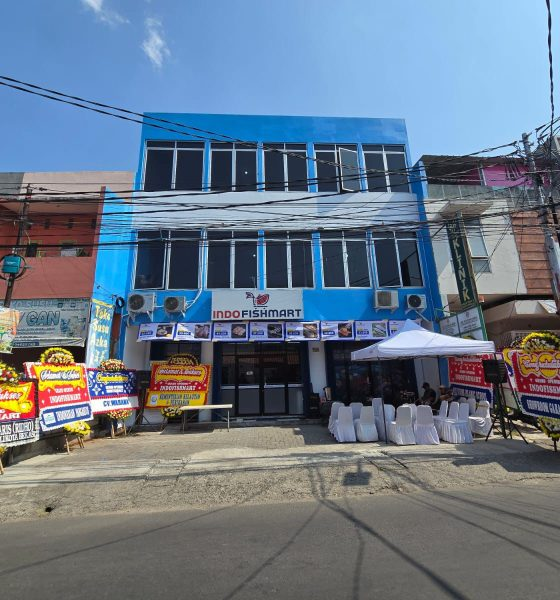
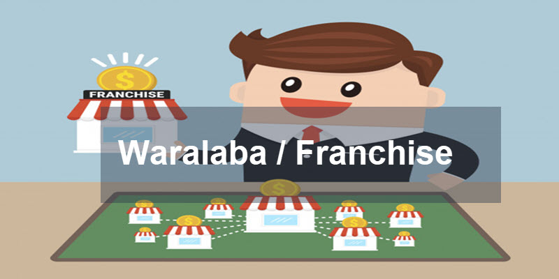
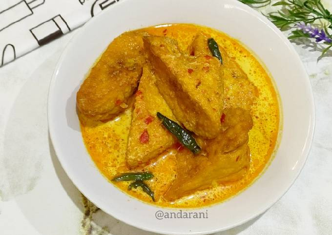
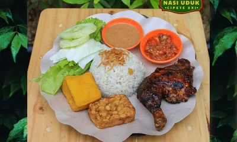
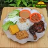
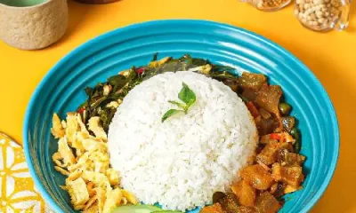
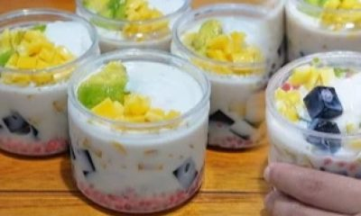

Uncategorized
Seni dan Kelezatan dalam Dunia Cocktail: Eksplorasi Kedalaman Rasa dan Kreativitas

Cocktail, sebuah seni minuman yang kaya akan sejarah dan keunikan, telah menjadi ikon dalam budaya minuman di seluruh dunia.

Dari sederhana hingga yang penuh dengan inovasi, artikel ini akan memandu Anda melalui perjalanan dalam dunia cocktail, mengeksplorasi sejarah, teknik pembuatan, ragam bahan, hingga tren terkini yang meramaikan ranah minuman ini.
Sejarah Cocktail
Sejarah cocktail melibatkan perpaduan unsur-unsur yang menciptakan harmoni rasa yang khas. Meskipun ada banyak teori mengenai asal-usul kata “cocktail,” kebanyakan setuju bahwa cocktail pertama kali muncul pada abad ke-19 di Amerika Serikat. Pada awalnya, cocktail adalah campuran sederhana antara spirit, gula, air, dan bitters. Seiring waktu, minuman ini berkembang menjadi beragam kreasi, dengan penambahan buah, rempah, dan berbagai bahan inovatif.
Seni Pembuatan Cocktail
Pembuatan cocktail bukan hanya sekadar mencampurkan bahan. Ada seni dan keterampilan yang terlibat dalam menciptakan minuman yang lezat dan seimbang. Bartender, para seniman di balik bar, memiliki pengetahuan mendalam tentang bahan-bahan, teknik pencampuran, dan presentasi estetika. Teknik muddling, shaking, stirring, dan layering menjadi keterampilan inti yang harus dikuasai untuk menciptakan cocktail yang benar-benar menggoda selera.
Ragam Bahan dalam Cocktail
Daya tarik utama dalam dunia cocktail adalah ragam bahan yang dapat digunakan untuk menciptakan rasa yang unik dan inovatif. Spirits seperti vodka, gin, rum, tequila, dan whiskey adalah bahan dasar yang sering digunakan. Tidak hanya itu, kehadiran likuer, sirup, jus buah segar, rempah-rempah, dan garnish menciptakan kompleksitas rasa yang menarik. Pilihan bahan-bahan ini memberikan kebebasan kreatif kepada bartender untuk menciptakan minuman yang tak terlupakan.
Cocktail Klasik yang Tetap Berjaya
Beberapa cocktail klasik telah menempatkan diri sebagai warisan tak tergantikan dalam dunia minuman. Martini, Negroni, Mojito, Margarita, dan Old Fashioned adalah beberapa contoh yang tetap populer dan terus dicintai oleh pecinta minuman di seluruh dunia. Keunikan dan keindahan masing-masing minuman ini tidak hanya terletak pada rasa, tetapi juga dalam cerita dan tradisi yang melingkupinya.
Inovasi dan Tren Terkini
Industri cocktail terus berkembang dengan munculnya tren dan inovasi baru. Bartender kini tidak hanya terpaku pada resep klasik, tetapi juga menciptakan minuman yang menggabungkan unsur-unsur tak terduga. Penggunaan infus buah-buahan eksotis, pewarnaan alami, dan teknik khusus seperti pembuatan es unik menjadi tren yang meramaikan dunia cocktail. Minuman ramah lingkungan juga mulai mendapatkan perhatian, dengan pengurangan limbah dan penggunaan bahan-bahan lokal sebagai fokus utama.
Baca juga:
Pengalaman Menjalani Bisnis Franchise Warteg: Sukses, Tantangan, dan Tips
Peluang Usaha Franchise Waralaba Kuliner dan Non Kuliner di Indonesia
Prospek Usaha Kuliner: Peluang dan Tantangan dalam Industri Kuliner
Cocktail Sehat: Menyelami Dunia Minuman yang Sadar Kesehatan
Dengan peningkatan kesadaran akan kesehatan, cocktail sehat menjadi tren yang menarik perhatian banyak orang. Minuman rendah kalori, menggunakan bahan-bahan segar, dan pengurangan gula adalah beberapa inovasi dalam menghadirkan pilihan minuman yang lebih sehat. Bartender sekarang mencari cara untuk memberikan pengalaman minum yang memuaskan tanpa mengorbankan kesehatan.
Cocktail di Era Digital: Dari Instagrammable hingga Bartender Virtual
Sosial media telah merubah cara orang melihat dan mengalami cocktail. Minuman yang Instagrammable, dengan presentasi yang menarik dan estetika yang indah, menjadi daya tarik tersendiri. Selain itu, bartender virtual atau aplikasi cocktail telah menjadi tren di kalangan pecinta minuman yang ingin mencoba resep-resep baru di rumah.
Budaya Cocktail di Berbagai Negara
Setiap negara memiliki kekhasan dalam menciptakan cocktail yang mencerminkan budaya dan tradisi lokal. Sementara Margarita adalah simbol dari kelezatan Meksiko, Sazerac mewakili warisan cocktail Amerika di New Orleans. Penjelajahan ragam cocktail dari berbagai belahan dunia tidak hanya menyajikan minuman yang lezat, tetapi juga memperkaya pemahaman kita akan keberagaman budaya.
Kesimpulan
Dalam dunia yang terus berubah dan berkembang, cocktail tetap menjadi simbol kreativitas, keunikan, dan kenikmatan. Dari sejarahnya yang kaya hingga tren terkini yang memikat, dunia cocktail adalah perpaduan seni dan sains. Bagi pecinta minuman, setiap tegukan cocktail adalah petualangan rasa yang tak terlupakan. Mari bersama-sama merayakan keindahan dan kelezatan dalam setiap sedutan minuman yang memikat, karena cocktail tidak hanya sekadar minuman, tetapi sebuah pengalaman yang memuaskan.
Franchise
Franchise Autopilot Terbaik di Akhir 2024: Indofishmart.id sebagai Solusi Bisnis Tanpa Repot


Menjelang akhir 2024, semakin banyak pebisnis yang mencari peluang franchise yang dapat berjalan secara autopilot. Sistem ini memungkinkan pemilik franchise untuk mendapatkan penghasilan pasif dengan intervensi minimal dalam operasional sehari-hari. Di antara berbagai pilihan yang ada, Indofishmart.id muncul sebagai salah satu franchise autopilot terbaik yang menawarkan solusi bisnis tanpa repot.
Keunggulan Franchise Autopilot Indofishmart.id
1. Sistem Manajemen Otomatis
Indofishmart.id telah mengembangkan sistem manajemen yang sangat otomatis dan efisien, sehingga mitra franchise dapat menjalankan bisnis tanpa harus terlibat dalam setiap detail operasional. Sistem ini mencakup manajemen inventaris, pemrosesan pesanan, hingga pengelolaan keuangan. Dengan bantuan teknologi canggih, Indofishmart.id memastikan bahwa setiap aspek operasional berjalan lancar tanpa memerlukan intervensi rutin dari pemilik franchise.
2. Tim Profesional yang Terlatih
Dalam model franchise autopilot, keberadaan tim profesional yang handal menjadi kunci kesuksesan. Indofishmart.id menyediakan tim yang terlatih dan berpengalaman untuk mengelola operasional harian franchise. Mulai dari sourcing produk, manajemen stok, hingga pelayanan pelanggan, semuanya ditangani oleh tim yang kompeten. Pemilik franchise hanya perlu mengawasi performa bisnis melalui laporan rutin tanpa harus terlibat langsung dalam operasional.
3. Teknologi Digital yang Terintegrasi
Di era digital, kemampuan untuk memanfaatkan teknologi menjadi sangat penting. Indofishmart.id menawarkan platform digital yang terintegrasi, memungkinkan pemilik franchise untuk memantau kinerja bisnis mereka dari mana saja dan kapan saja. Sistem ini mencakup dashboard yang memberikan informasi real-time mengenai penjualan, stok, dan keuangan, sehingga pemilik dapat mengambil keputusan strategis tanpa harus terlibat langsung dalam kegiatan sehari-hari.
4. Pengelolaan Pemasaran yang Efektif
Indofishmart.id memahami pentingnya pemasaran yang efektif untuk mendukung kesuksesan franchise. Oleh karena itu, mereka menyediakan dukungan penuh dalam hal pemasaran, mulai dari strategi branding, promosi digital, hingga manajemen media sosial. Semua aspek pemasaran ini dikelola secara sentral, sehingga pemilik franchise dapat fokus pada strategi pengembangan bisnis tanpa harus khawatir tentang upaya pemasaran yang memakan waktu dan tenaga.
5. Model Bisnis yang Menghasilkan Penghasilan Pasif
Keunggulan utama dari model franchise autopilot Indofishmart.id adalah kemampuannya untuk menghasilkan penghasilan pasif bagi pemiliknya. Dengan sistem yang telah terstruktur, didukung oleh tim profesional dan teknologi canggih, pemilik franchise dapat menikmati aliran pendapatan stabil tanpa harus terlibat intensif dalam operasional bisnis. Hal ini menjadikan Indofishmart.id sebagai pilihan yang ideal bagi mereka yang ingin berinvestasi dalam bisnis yang menguntungkan tanpa harus meninggalkan pekerjaan utama atau aktivitas lainnya.
Kesimpulan
Franchise autopilot menjadi pilihan menarik di penghujung tahun 2024, terutama bagi mereka yang mencari peluang bisnis dengan penghasilan pasif. Indofishmart.id menawarkan solusi ideal dengan sistem manajemen otomatis, dukungan tim profesional, teknologi digital terintegrasi, dan pengelolaan pemasaran yang efektif. Dengan semua keunggulan ini, Indofishmart.id membuktikan dirinya sebagai salah satu franchise minimarket terbaik yang dapat diandalkan untuk mendatangkan penghasilan tanpa repot. Bagi Anda yang mencari model bisnis yang efisien dan menguntungkan, Indofishmart.id adalah pilihan tepat.
Website Indofishmart: Indofishmart.id
Gabung Kemitraan: https://indofishmart.id/gabung-kemitraan/
Uncategorized
Shopee Indonesia Akan Tutup Permanen Layanan Customer Service Di Jakarta Pengumanan Hari Senin 20 Mei 2024
Berikut Desas Desus Penutupan Operasional Shopee Untuk Divisi Customer Service Di Jakarta
Shopee telah mengumumkan penutupan layanan customer service di Jakarta sebagai bagian dari upaya efisiensi perusahaan. Penutupan ini merupakan langkah lanjutan dari serangkaian PHK dan penutupan operasi di berbagai negara akibat kondisi ekonomi global yang menantang dan tekanan untuk meningkatkan profitabilitas (Katadata) (KOMPAS.com).
Namun, sejauh ini belum ada konfirmasi resmi apakah Shopee akan memindahkan layanan customer service-nya ke Solo atau Yogyakarta. Informasi yang kami dan dapatkan dari orang dalam shoopee Isu ini beredar hanya mengindikasikan bahwa langkah-langkah ini adalah bagian dari penyesuaian bisnis dan strategi untuk lebih fokus pada efisiensi operasional dan adaptasi terhadap perubahan ekonomi global (Katadata) (KOMPAS.com).
Banyak Melakukan Perekrutan Untuk Customer Service Di Solo/Jogja
Shopee memang sedang melakukan banyak perekrutan untuk posisi customer service di Solo dan Yogyakarta. Hal ini mungkin terkait dengan rencana penutupan layanan customer service mereka di Jakarta. Saat ini, ada berbagai lowongan terbuka untuk posisi customer service di kedua kota tersebut.
Di Solo, Shopee membuka posisi untuk “Customer Service Premium – Operations” yang berbasis kontrak, serta “Customer Operations, Team Leader” yang hanya berbasis kontrak (Shopee Careers) (Shopee Careers). Sedangkan di Yogyakarta, tersedia lowongan untuk posisi “Customer Service – Quality Assurance” dan “Trainer Staff – Customer Service” (Jobstreet) (Jobstreet).
Perekrutan ini menunjukkan bahwa Shopee sedang memperkuat tim layanan pelanggannya di Solo dan Yogyakarta, kemungkinan sebagai langkah strategis untuk memindahkan layanan customer service mereka dari Jakarta. Bagi yang berminat, informasi lebih lanjut dan aplikasi bisa diakses melalui situs karir Shopee atau portal lowongan kerja seperti JobStreet (Shopee Careers) (Jobstreet).
Akan Terjawab Pada 20 Mei 2024
Setelah melakukan Pencarian Fakta terhadap berita tersebut berdasarkan informasi dari orang dalam shopee semua akan terjawab pada hari senin minggu depan atau 20 Mei 2024, sebelum pihak shopee akan mengumumkan nama-nama karyawan yang akan di PHK langsung kepada karyawan. Di perkirakan akan ada Ratusan karyawan yang terdampak oleh kebijakan dari shopee ini.

-
 Jajan1 year ago
Jajan1 year agoNasi Cokot: Eksplorasi Kelezatan dan Cerita di Balik Kuliner Tradisional Indonesia
-


Review1 year agoReview Kulineran di Nasi Uduk Cipete XXI, Menu dan Harga
-

 Review1 year ago
Review1 year agoReview Tempat Makan Sengoseng Tebet Jakarta Selatan
-

Franchise1 year agoReview Kemitraan Franchise Es Teler Sultan
-
Review1 year ago
Review Siomay Mitra Jatinegara yang Sangat Lezat
-
 Kuliner1 year ago
Kuliner1 year agoReview Pecel Lele Lamongan 35 yang Menggoda Selera
-
Uncategorized1 year ago
Shopee Indonesia Akan Tutup Permanen Layanan Customer Service Di Jakarta Pengumanan Hari Senin 20 Mei 2024
-
Review1 year ago
Menikmati Kelezatan Kuliner Nusantara di Warteg 21 Pulomas: Sebuah Review Mendalam
Komentar Terbaru